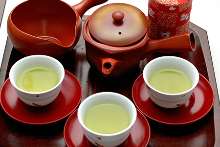
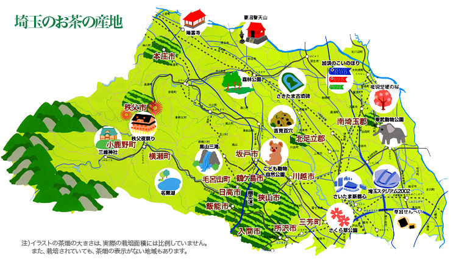

狭山茶の起源を知る
日本三大銘茶の一つに数えられる狭山茶は一体いつから親しまれている物なのでしょうか？
日本三大銘茶の一つに数えられる狭山茶は一体いつから親しまれている物なのでしょうか？
由来は諸説ありますが、最も振るい記録によると1200年代にまで遡ります。
1200年代と言うと鎌倉幕府やチンギス・ハーンの時代ですから
相当昔から飲まれているようです。
狭山茶ってなに？
狭山茶は埼玉県を中心に栽培されている日本茶の総称です。
1200年頃に寺院で薬用茶の栽培がはじまり、
1800年代半ばには飲用茶の栽培が広く行われるようになりました。
狭山茶は埼玉県南西部の入間市、狭山市、所沢市を中心に栽培・製造されています。
狭山茶の多様性
お茶の産地として狭山を知っている方は少ないのでないでしょうか。
世界的には、大量生産地である静岡や抹茶を生産している宇治が良く知られています。
狭山茶を作る農家はは小規模農家が多く、生産量も全国生産の2％（平成30年度生葉）です。
小規模の農家が茶園で栽培した茶葉を、自工場で製茶し、販売まで行っています。
各茶園が生産するお茶の味は一軒ごとに異なり、この多様性は狭山茶の大きな魅力の一つです。
これは各地から茶葉を集荷し、共同加工、協同保管をする大規模生産地にはない特徴です。
多種多様に存在する狭山茶の中から自分好みの一杯に探してみてはいかがでしょうか。